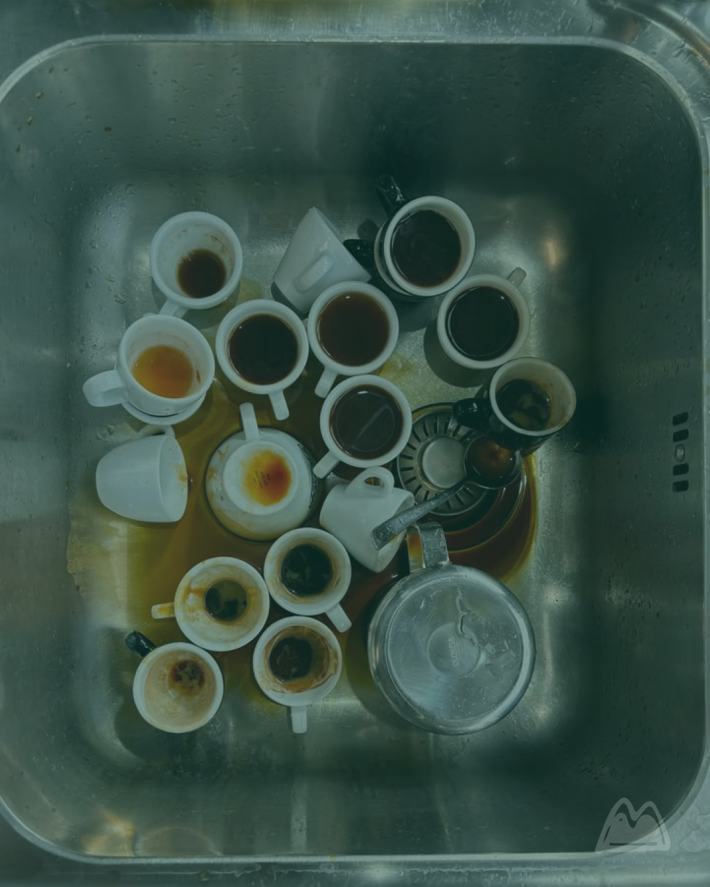
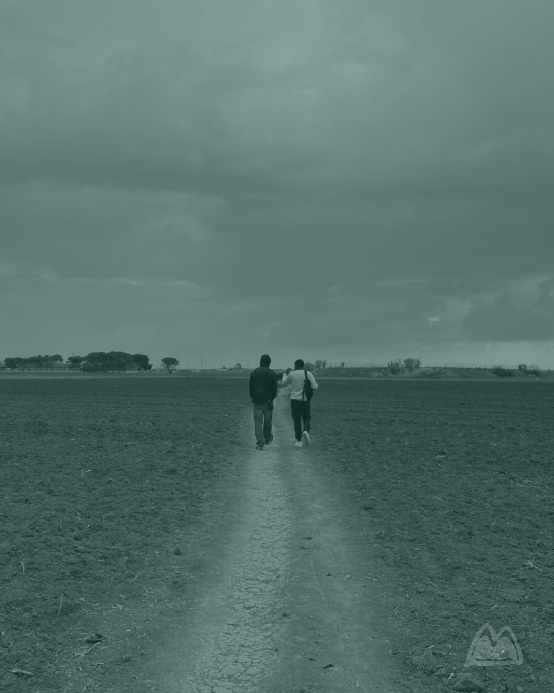

TUTTO IL MONDO È PAESE
Queste parole sono combinate in modo che chiunque le legga possa ritrovare una sincera curiosità ormai perduta, aiutando specialmente chi si senta sempre più avvilito dalle spasmodiche apparizioni che il nostro periodo storico ci propone. Credo che più spesso di quanto si possa pensare, questi abbagli accecanti ci impediscono di mettere a fuoco il reale e di sviluppare un'istantanea della nostra esistenza.
Tutto il mondo è paese, tutto il mondo è abitato da persone con delle storie ed un passato stratificati. Nella quotidianità turbolenta spesso perdiamo il contatto con la nostra dimensione, quella di vere e proprie particelle in un ammasso infinito di elementi. Le nostre idee si arrampicano su impalcature elevatissime, delle quali non riusciamo a riconoscere neanche più la forma e che in molte occasioni ci rendono vittime di modelli autoimposti, dannosi per la nostra serenità.
Le esperienze che ci definiscono potrebbero presentarci nuove occasioni per comprendere appieno questo ridimensionamento vitale.
Tra una presenza molecolare in questo grande giardino che ereditiamo momento dopo momento ed una pienezza di significato che irradia ogni piccola interazione elementare, si può riscoprire il gusto per un piacere che apra nuovi orizzonti sulla riflessione e sul vissuto della collettività.

Nelle passeggiate notturne, preferibilmente estive o primaverili per incontrare il favore del clima, procediamo lentamente sul sentiero dell’esistenza, mentre le stelle nel cielo ci accompagnano e ci guidano attraverso questo viaggio.
Il percorso alle volte ci sembra limitato, privo di senso, non vediamo altro che il piccolo passo da compiere dinanzi a noi, senza comprendere il percorso completo. Ma questo stesso movimento può spaventare, può privarci di quella spontaneità che ci rende umani, una tenuità essenziale alla nostra natura.
Petronio scriveva che «Ovunque c'è in mezzo il cielo»: per quanto possiamo spostarci con i nostri corpi o con le nostre menti, non possiamo evitare il cielo, che sia di giorno o che sia di notte è sempre lì a trasmettere meraviglia alla nostra anima, una fonte di eterno stupore, la vera causa prima delle nostre paure e delle nostre gioie, delle nostre speculazioni e dei nostri ricordi. Ogni singolo pensiero e sentimento muore e nasce da lì, non potrebbe essere altrimenti.
Che si stia parlando con una persona a noi cara o sconosciuta, questa emozione di meraviglia si nasconde sotto il velo della realtà sensibile, è sempre lì presente, ma, presi nella morsa della paura o del dolore, la diamo per scontata, dimenticando la sua potenza e onnipresenza.
Se nei nostri dialoghi riuscissimo a prestare la dovuta attenzione, saremmo capaci di riconoscere questa energia che passa da bocca a bocca, viaggia per i nostri corpi e ritorna fuori per rinnovarsi continuamente, quasi che il passaggio da un elemento all’altro fosse una tappa necessaria per mantenere alta l’intensità dell’emozione.
Il linguaggio potrebbe essere nato da un eccesso di energia presente in noi, uno scarto superfluo e allo stesso tempo necessario con cui cerchiamo di rendere giustizia alle vibrazioni interiori, senza però mai esternarle del tutto. I desideri sono il frutto di questo passaggio, in ogni momento si rinnovano, si definiscono sempre più accuratamente, per mettono di calibrare meglio il tiro, ci rendono più o meno predisposti ad un certo modo di esprimerci, cosicché possiamo trovarci nelle migliori condizioni possibili per comunicare quel determinato stato a cui sentiamo di appartenere.
Dobbiamo necessariamente ritrovare una dimensione comune.

Allo stesso tempo ci rapportiamo con altri desideri esterni, i quali sono simili ai nostri per natura, ma completamente diversi per intensità e scopo.
Nei paesi del meridione le giornate sono scandite dagli eventi canonici della tradizione culturale: il rito del pranzo oltrepassa il significato del pasto funzionale al nutrimento, per assumere quello della scansione temporale, in modo che ci si possa preparare nuovamente per il pasto successivo, discutendo, non appena terminato il pasto precedente, della prossima meta culinaria. Il pendolo oscilla tra la fame e il sogno ad occhi aperti di nuovi incontri gastronomici.
Con amici, familiari o in compagnia di sé stessi, qui non si mangia mai davvero da soli.
Che tu lo voglia o meno, nell’atto del nutrimento, la riconnessione con questo mondo si fa più viva che mai. Il cibo cattura al meglio l’immagine sacra della natura, che abbiamo contribuito a formare generazione dopo generazione, venerando l’origine di questi prodotti che cela, dietro forme, tonalità e sapori, i segreti più indecifrabili della terra, ristabilendo un’armonia vitale.
Come le conversazioni, i pasti diventano un momento significativo per lo scambio di energia ed il dialogo interiore; quando si parla con qualcuno, quando si mangia con qualcuno, in realtà non si sta facendo altro che riportare il cuore e la mente alla loro posizione ideale: il cuore e la mente di chi ci sta accanto. Smarriti nei nostri pensieri amorfi e nelle nostre esistenze individuali limitanti, le pratiche collettive riportano alla luce un legame intenso che permette di rivitalizzare il senso di comunità.
Queste riflessioni possono servire a chiunque si senta perso in questa dimensione artificiale, che sempre più sembra averci segnato in modo definitivo, senza una via d’uscita.
Possono rappresentare un monito per ricordare, a chi si senta estraniato in questa gabbia a cielo aperto, la struttura originaria di certe piccole dinamiche, che il cielo non è sopra di noi ma intorno a noi, anche quando camminiamo per strada, mentre pensiamo, mangiamo, parliamo. Proverei, con qualche nota di ardore, a nuotare insieme in questa immensità ormai a noi sconosciuta, perché ricordare quanto è leggera un’anima rispetto alle potenzialità che possiede può essere un ottimo antidoto contro i mali del nostro tempo.
Seguici sulla nostra pagina Instagram per non perdere neanche un articolo
@rivista.paesa